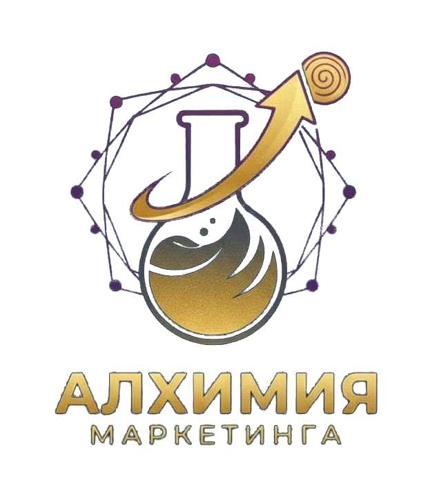
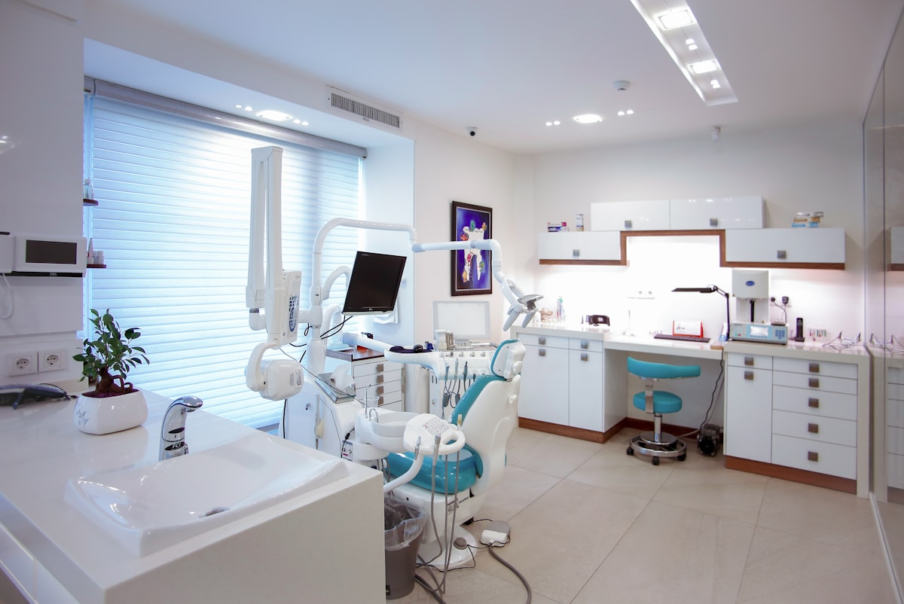
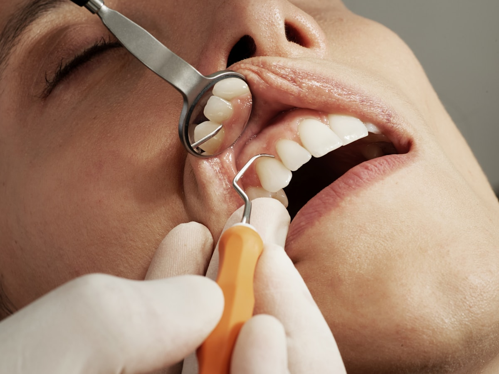

КЕЙС · ГОД РАБОТЫ
Стоматология,
город-миллионник
+199%
переходов в профиль
Период: 01.01.2025 — 31.12.2025
Источник: Яндекс Бизнес · статистика карточки за 2025 год.
Маркетинг для стоматологий и клиник
Приводим в порядок точки, где пациент выбирает стоматологию: Яндекс Карты, 2ГИС, Google Карты, ПроДокторов, СберЗдоровье, НаПоправку, ДокТу и Яндекс Медицина. Отдельно работаем с репутацией клиники: сбором свежих отзывов, ответами и разбором спорных ситуаций.

Метод
Собственник обычно формулирует проблему просто: «мало заявок». Но запись часто ломается раньше: карточка не показывает нужные услуги, у врачей мало свежих отзывов, администратор не видит источник звонка, а конкурент рядом выглядит убедительнее.
Поэтому стартуем не с рекламного бюджета, а с аудита маршрута пациента: что он видит в картах, что читает в агрегаторе, какой отзыв встречает перед звонком. Слабые места исправляем по приоритету: сначала то, что быстрее влияет на обращение.
Карточки стоматологий в картах Яндекса, 2ГИС и Google
ПроДокторов, СберЗдоровье, НаПоправку, ДокТу, 32Топ, Яндекс Медицина
Разрабатываем стратегию по сбору отзывов. Работаем с негативом.
Путь выбора
Пациент быстро сравнивает стоматологии рядом: кто ближе, у кого понятные услуги, свежие фото, нормальные ответы на отзывы и удобная запись. Если на одном шаге пусто или тревожно, он просто выбирает следующую стоматологию в списке.


Источник: личные кабинеты Яндекс Бизнес и ПроДокторов по проектам агентства. Периоды и подробности — в разделе «Кейсы».
Услуги
После аудита собираем понятный план работ на квартал: что исправляем в карточках, агрегаторах, отзывах и рекламе, какие метрики отслеживаем и что должно привести к обращениям.
Настраиваем SEO для карточек в картах: перерабатываем названия услуг под поисковые запросы пациентов, готовим SEO-оптимизированные описания.
Собираем ключевые цифры из кабинетов: просмотры, переходы, звонки, записи и динамику по месяцам. Показываем, что изменилось и какие действия стоит сделать дальше.
Дайте ссылку на вашу карточку в картах или агрегаторе — посмотрим глазами пациента, где пропадает доверие, и скажем, что стоит исправить первым.
Разобрать мою карточкуКейсы
Скриншоты подписаны по источникам: Яндекс Бизнес, ПроДокторов или другой кабинет площадки. Названия клиник скрываем по NDA, исходники и логику работ разбираем на созвоне.
Стартовая точка — слабая карточка в Яндекс Бизнесе и неоформленный ПроДокторов. Собрали профиль клиники, страницы 6 врачей, запустили сбор отзывов через QR на ресепшене. Через 3 месяца клиника поднялась с 3-го на 2-е место в рейтинге ПроДокторов.
Источник: Яндекс Бизнес. Раздел «Статистика»: откуда люди переходят в профиль и какие действия совершают. Название клиники скрыто.
Источник: ПроДокторов · записи в клинику за период.
Источник: ПроДокторов · звонки в клинику.
Источник: ПроДокторов · просмотры страниц клиники и врачей.
Источник: ПроДокторов · место в рейтинге района.
Ниже — не презентационные графики, а скриншоты раздела «Статистика» из кабинетов.
Период: 01.01.2025 — 31.12.2025
Источник: Яндекс Бизнес · статистика карточки за 2025 год.
Период: 01.01.2026 — 31.03.2026
Источник: Яндекс Бизнес · статистика карточек за квартал.
Период: 01.02.2026 — 30.04.2026
Источник: Яндекс Бизнес · статистика карточки за квартал.
Период: 01.02.2026 — 30.04.2026
Источник: Яндекс Бизнес · статистика карточки за квартал.
Период: 01.02.2026 — 30.04.2026
Источник: Яндекс Бизнес · статистика карточки за квартал.
Как работаем
Нам нужны Карты, агрегаторы, сайт и город. Если пока есть только одна карточка в картах — начнём с неё и постепенно расширим работу.
За 3 рабочих дня показываем, где пациент теряет доверие, что можно исправить быстро и какие каналы трогать первыми.
Согласуем работы на квартал, метрики, бюджет и зоны ответственности: что делаем мы и что нужно от клиники.
Карточки, агрегаторы, отзывы и реклама ведутся по плану. Раз в месяц смотрим переходы, звонки, записи и следующий шаг.
Бесплатный аудит
Посмотрим, как карточка выглядит для пациента: что видно сразу, какие услуги и врачи вызывают доверие, где конкурент рядом сильнее и что можно поправить без большого бюджета.
Без продажи «всё включено». Если проблема не в наших каналах, так и скажем. Формат — один короткий разбор по делу.
Свяжемся с вами в течение рабочего дня.
Прямой контакт
Лично отвечает Дмитрий, основатель агентства. Пришлите ссылку на карточку и город — в ответ скажу, что видно сразу и с какого шага есть смысл начинать.